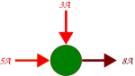

Sesión 10: Leyes de Kirchhoff
Parte 1: La Ley de los Nodos (Corrientes)
Tema: Circuitos Complejos
Duración: 30 min (Parte 1)
Duración: 30 min (Parte 1)
A veces, la Ley de Ohm no basta porque los circuitos tienen muchos caminos. Aquí entra Gustav Kirchhoff con dos reglas de "sentido común".
1ª Ley: Ley de Corrientes (Nodos)

Definición: La suma de las corrientes que ENTRAN a un punto es igual a la suma de las corrientes que SALEN.
Σ Ientrada = Σ Isalida

En el dibujo: Entran 5A y 3A. Tienen que salir 8A obligatoriamente.
5A + 3A = 8A
🚰
Analogía: La Tubería de Agua (o Tráfico)
Imagina una unión de tuberías en "T". Si entran 10 litros de agua por un lado, no pueden desaparecer. Tienen que salir esos mismos 10 litros por las otras salidas.
"La carga eléctrica no se crea ni se destruye, solo se distribuye."
Imagina una unión de tuberías en "T". Si entran 10 litros de agua por un lado, no pueden desaparecer. Tienen que salir esos mismos 10 litros por las otras salidas.
"La carga eléctrica no se crea ni se destruye, solo se distribuye."
🧠 Reto Mental Rápido:
A un nodo llegan tres cables. Por el cable A entran 2 Amperes. Por el cable B entran 3 Amperes. ¿Cuánto sale por el cable C?